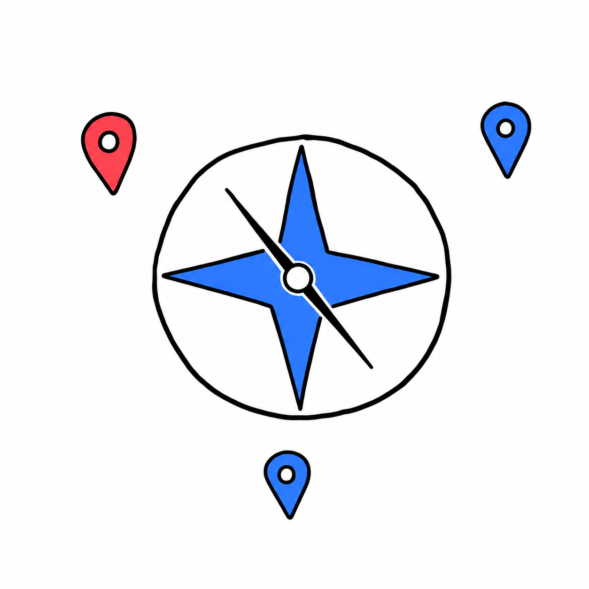

構築難易度 ↑ 開発が必要
そのまま使う ↓
← 情報収集・要約
自社独自ワークフロー →
左上
サブスク付属の高度機能
契約済みのChatGPT有料版・M365等の枠で、高度な処理を追加費用なしで使う
右上
開発者向け（OSS・コーディング支援）
オープンソース基盤やコード補助。柔軟に作り込めるが技術力が要る
左下
そのまま使う自律型・生成AI付属
登録してすぐ。情報収集と要約を無料枠で試す最初の一歩
右下
ノーコード構築（Dify・Coze等）
画面操作で"自社仕様"を組む。プログラミングは基本不要